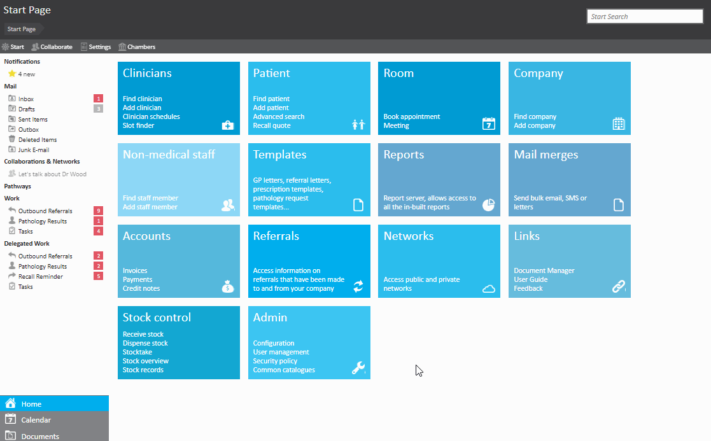
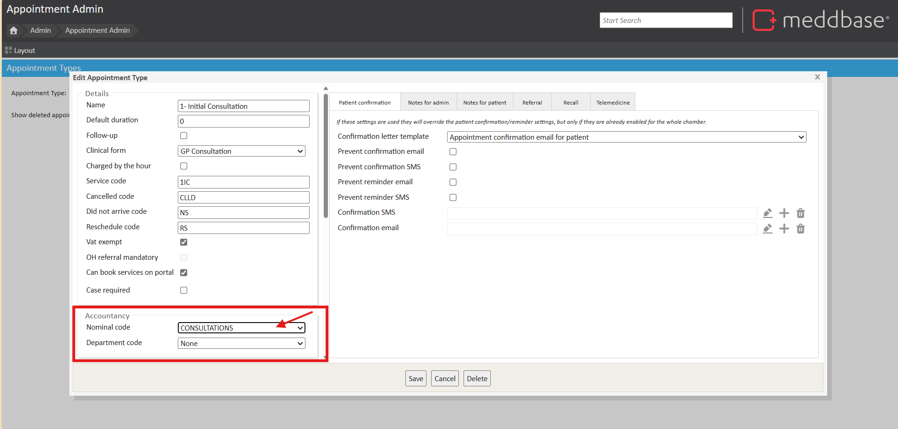
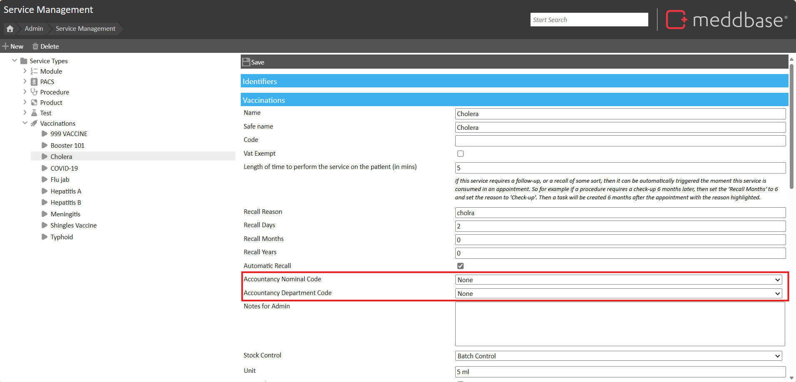

Nominal and department codes can be used to record income from specific services and appointments.
This article will explain how to add nominal and department codes and then apply them to appointments and services.
To get started, navigate to Admin > Configuration > Accountancy to add your nominal and/or department codes.
Within the Accountancy page, click the '+' icon next to 'Nominal codes' or 'Department codes'. Type in your code and click 'OK' followed by clicking 'Save' in the top left corner.

If you are using the Xero Integration, only Nominal Codes are used. When you create a new nominal code in Meddbase, you will need to create a new account of the same Nominal code Name in Xero.
Once saved, the nominal and department codes can be assigned to appointments and services. To do this, navigate to Admin > and either Appointment Admin (for appointment types) or Service Management (for services such as vaccinations, procedures etc.). Next, find the appointment or service you want to assign a code to, search for your code from the dropdown and save.

